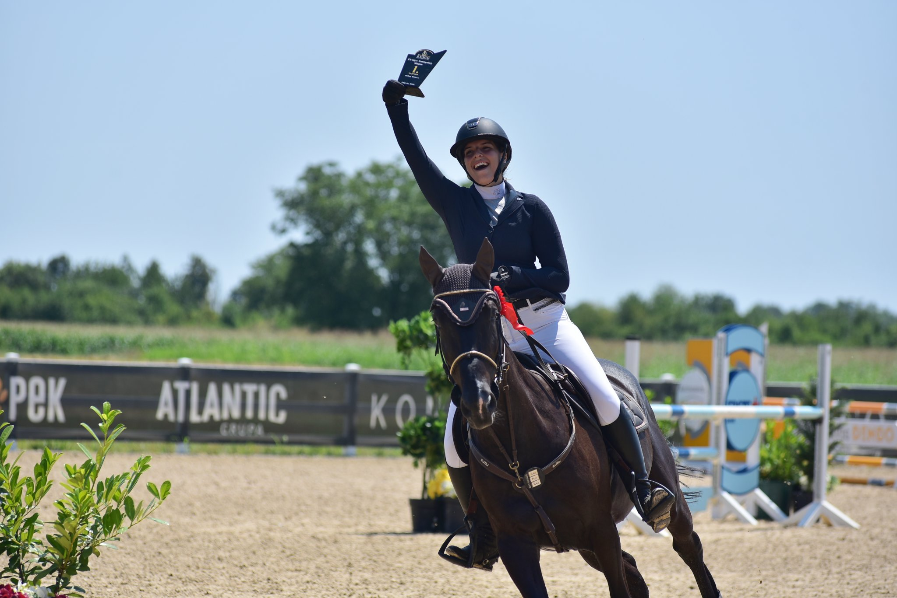
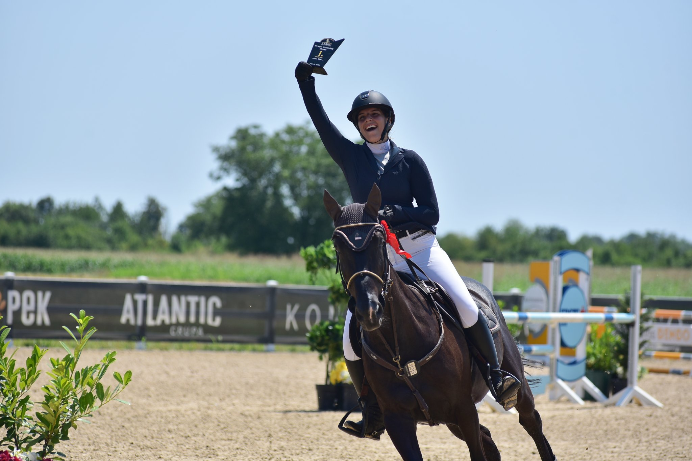

O meni
Moje ime je Anja i studentica sam Grafičkog fakulteta Zagreb. Bavim se preponskim jahanjem i aktivno sudjelujem na preponskim turnrima. Ljubav prema konjima je prerasla u karijeru, gdje se bavim s mladim konjima i vodim preponske i dresurne treninge klijentima. Isto tako sam uvijek imala veliku ljubav prema crtanju i kreiranju različitih projekata kao što su editiranje videa, slika i slično.
 
